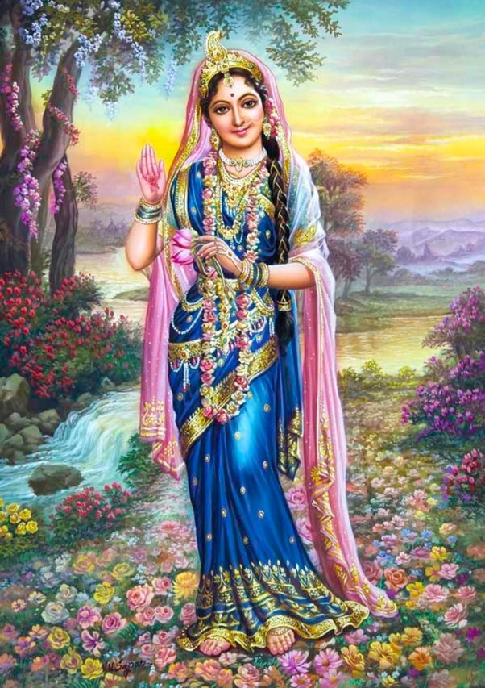
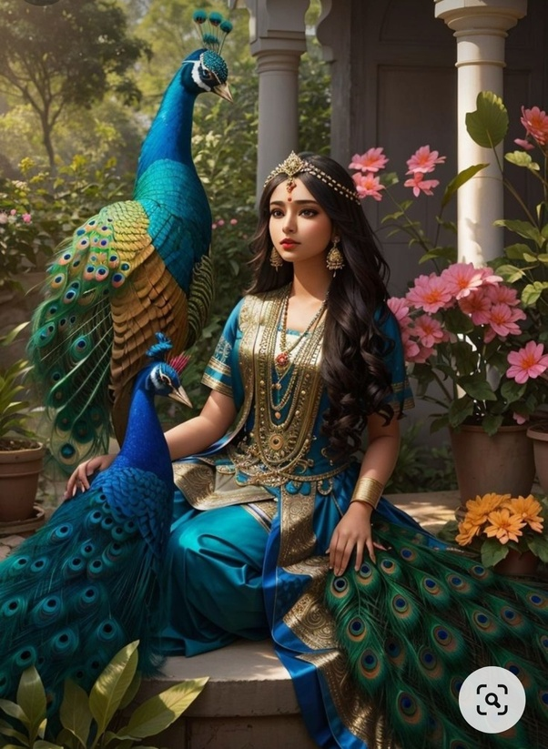

Radharani, also known as Radha, is the divine consort of Lord Krishna and the supreme goddess in the Gaudiya Vaishnavism tradition. She is revered as the embodiment of pure, selfless love and is often depicted as the personification of Bhakti (devotion). Radharani's love for Krishna is considered the highest form of devotion, transcending the material world and leading to the ultimate spiritual union with the divine.
Born in Barsana, a village near Vrindavan, Radha is celebrated for her unparalleled beauty, grace, and devotion to Krishna. Her relationship with Krishna is often portrayed as the most intimate and sacred, symbolizing the soul's longing for and connection with the divine. Radha's love for Krishna is not just romantic but represents the soul's intense desire to reunite with the Supreme Being.
In the Bhakti tradition, Radharani is worshipped alongside Krishna, and her devotees seek to attain the same level of devotion and love that she embodies. She is seen as the supreme goddess, who, through her love, controls and guides Krishna, the Supreme Personality of Godhead. Her stories and teachings inspire millions of devotees who aspire to experience the divine love that she represents.

Radharani holds a special place in Hindu spirituality, especially in the Vaishnavism tradition, where she is worshipped as the queen of Vrindavan and the most beloved of Krishna. Her significance is multifaceted, representing different aspects of the spiritual journey.
Radharani is considered the embodiment of Bhakti, the purest form of love and devotion towards the divine. Her love for Krishna is selfless and unconditional, setting an example for all devotees. Radha’s devotion is not just about worship but involves a complete surrender to the will of Krishna, where the devotee loses all sense of self in the service of the beloved.
In the Hindu tradition, Radharani represents the feminine aspect of the divine, often referred to as Shakti. She is the energy that complements and empowers Krishna, symbolizing the inseparable union of the masculine and feminine principles in the universe. Radha’s role as the divine consort of Krishna underscores the importance of balance and harmony in the cosmic order.
Radha’s love for Krishna is seen as the ideal of divine love, transcending all earthly desires and attachments. Her love is not limited to the physical realm but is a spiritual connection that represents the eternal bond between the soul and God. This divine love is the ultimate goal of the Bhakti path, where the devotee seeks to merge with the divine through pure and selfless love.
Devotion to Radharani is central to the practice of Bhakti Yoga, particularly in the Gaudiya Vaishnavism tradition, where she is worshipped as the supreme goddess. Devotees of Radha seek to emulate her devotion and surrender to Krishna, aspiring to attain the same level of selfless love that she embodies.
Temples dedicated to Radharani, such as the Radha Raman Temple in Vrindavan and the Radha Gopinath Temple in Barsana, are places of pilgrimage for devotees from around the world. These temples celebrate Radha's divine love through daily worship, festivals, and the singing of Bhajans (devotional songs) that praise her virtues and her unbreakable bond with Krishna.
Festivals like Radhashtami, which celebrates Radha’s appearance day, are observed with great devotion. On this day, devotees perform special prayers, sing kirtans, and engage in devotional activities that honor Radha and seek her blessings.
In addition to temple worship, many devotees express their love for Radha through personal practices like Japa (chanting) and meditation, focusing on her name and her qualities. The Hare Krishna Mahamantra, which includes the names of both Radha and Krishna, is a central practice in this tradition, bringing devotees closer to the divine couple.
The stories of Radharani and Krishna are an integral part of the Vaishnava tradition and are told and retold in various scriptures, poems, and songs. These stories depict the deep bond between Radha and Krishna and their transcendental love, which is considered the highest form of devotion in the Bhakti tradition.
One of the most famous stories is the Raas Lila, where Krishna dances with Radha and the Gopis (milkmaids) in the moonlit forests of Vrindavan. In this divine dance, Radha is portrayed as the most beloved of Krishna, and their dance is seen as a symbolic representation of the soul's eternal dance with the divine.
Another significant story is Radha’s Viraha, or separation from Krishna. This story highlights the pain of separation that Radha experiences when Krishna leaves Vrindavan. Radha’s deep longing and pain are seen as a reflection of the soul’s intense yearning for union with the divine, and her devotion is a model for all devotees.
Radha’s love for Krishna is also beautifully depicted in various poems by saint-poets like Jayadeva, who composed the famous Gita Govinda. In these poems, Radha’s emotions, ranging from love and joy to separation and longing, are expressed in exquisite verses that capture the depth of her devotion to Krishna.